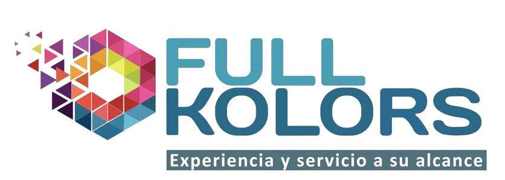
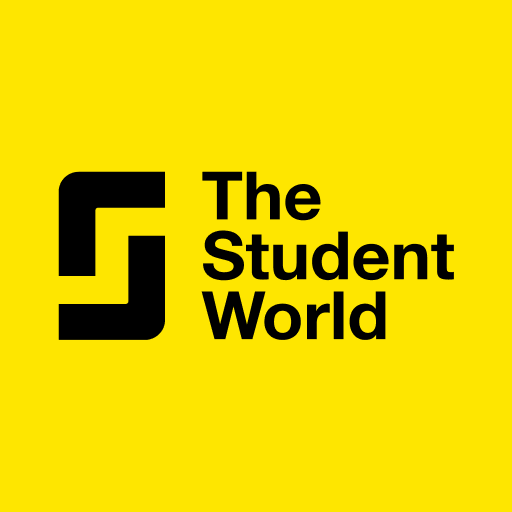

Experiencia
Asistente de Servicio al Cliente
FullKolors – (Vacaciones Universitarias 2021–2025)

2021 – 2025
- Atención personalizada a clientes en tienda, resolviendo dudas y ofreciendo asesoramiento en productos.
- Apoyo en caja y manejo de pagos.
- Organización de productos, inventario y reposición en estanterías.
- Desarrollo de habilidades de comunicación y resolución de problemas en situaciones de demanda.
Guía Asistente – Programa Internacional de Orientación Universitaria
Student World – (Trabajo anual, desde 2023)

Desde 2023
- Acompañamiento y orientación a estudiantes en visitas a universidades internacionales.
- Coordinación de grupos, logística de transporte y alojamiento durante el viaje.
- Apoyo en la traducción y comunicación entre instituciones educativas y estudiantes.
- Representación de la institución ante universidades del extranjero.